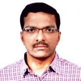
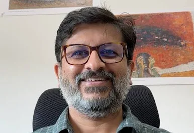

Welcome!
The rapid adoption of data-centric AI has amplified the demand for large-scale, diverse, and high-quality datasets. However, real-world data is often scarce, sensitive, or biased, creating significant bottlenecks for training and evaluating robust AI systems. Advances in synthetic data generation—powered by Large Language Models (LLMs) and generative AI—are unlocking new possibilities to create realistic, domain-relevant, and privacy-preserving datasets. The SynData@SIGMOD 2026 workshop aims to bring together researchers and practitioners from data management, AI systems, and machine learning to explore the next generation of synthetic data pipelines. The workshop will serve as a leading venue for presenting new research, exchanging ideas, and fostering collaborations at the intersection of databases and AI-driven data generation. This edition's theme is: "Building Trustworthy Synthetic Data Pipelines for Data-Centric AI."
Workshop Scope:
This workshop has a broad focus, including but not limited to:
1. Architectures and systems for scalable synthetic data generation
2. Synergy between data management and LLM-based data synthesis
3. Evaluation and benchmarking of fidelity, realism, and downstream utility
4. Responsible data generation, including privacy, fairness, and bias mitigation
5. Applications of synthetic data in data-scarce domains (healthcare, finance, enterprise analytics)
6. Storage, management, and validation of synthetic datasets
7. Quality assessment and certification frameworks for synthetic data
8. Synthetic data for model training, testing, and benchmarking
Organizers
Columbia University
UC San Diego
Adobe Research
Adobe Research
Adobe Research

Adobe Research

IIT Delhi
Contact
To mail the organizers, please send an email to rnarayanam@adobe.com
Correspondence:
Ramasuri Narayanam:
rnarayanam@adobe.com
Subrata Mitra:
eugene@columbia.edu